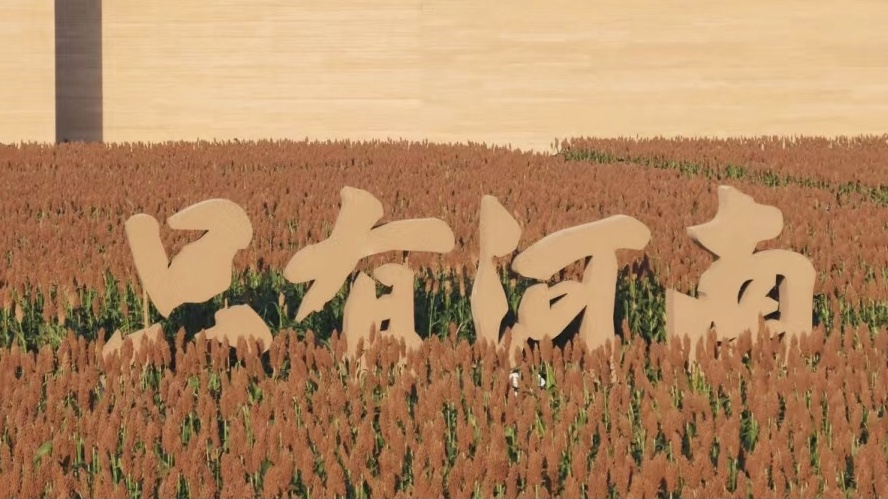
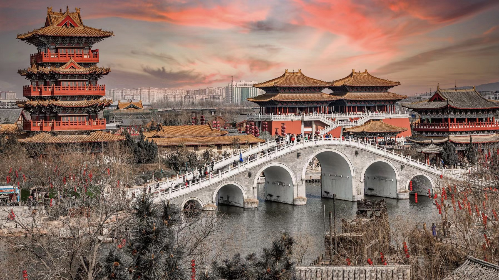

根深蒂固
中原大地，沃野千里，河南，这片承载着华夏文明根脉的土地，宛如一部厚重的史书，在岁月的流转中书写着中华民族的辉煌篇章。从远古洪荒到盛世繁华，从黄河奔腾到嵩岳巍峨，这里的一草一木、一砖一瓦都浸润着深厚的历史底蕴与独特的文化风韵。
这里是中华文明的摇篮，是“最早的中国”的发源地。仰韶彩陶绘出先民对生活的热爱，二里头遗址揭开夏王朝神秘的面纱；殷墟甲骨文镌刻下汉字最初的足迹，诉说着商代青铜器的恢弘壮丽。洛阳城下的汉魏故都，开封街巷中的宋韵遗梦，无不彰显着昔日帝都的雄浑气象。十三朝古都的荣耀，见证了无数帝王将相的兴衰成败，也孕育了灿若星辰的思想和艺术瑰宝。
风过中原，拂去的是尘埃，留下的是永恒的记忆。河南，这方饱经沧桑却始终焕发青春的土地，像一位历经风雨依然挺立的长者，用她的博大胸怀滋养了一代又一代中华儿女。她告诉我们，历史并非冰冷的过去，而是一种鲜活的力量，它穿越时空，启迪未来。